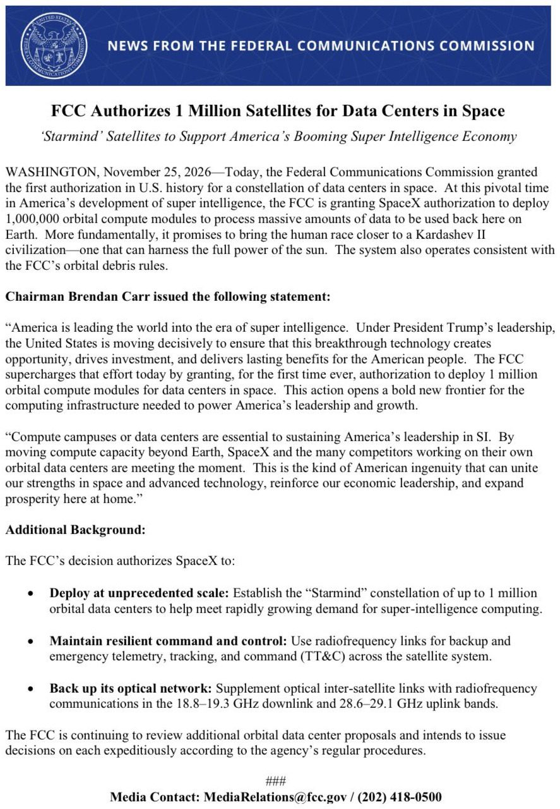
DATA CENTERS IN SPACE🇺🇸
Today, in a historic first, the FCC approved SpaceX’s request for 1 million satellites (orbital compute modules) to create data centers in space
The Starmind & competitor constellations will use solar power to extend America’s lead in Super Intelligence
🚨 30 things the USAID files exposed about the Biden administration. 👇
1. Oct 2022: USAID's head of disinformation wrote, "We need to get through the midterms without any leaks!"
2. Oct 2022: The White House disinformation plan was scrapped because it "failed to square the challenges of domestic vs. foreign disinformation."
3. July 2022: USAID held off on its own disinformation office because of the backlash to DHS's "Disinformation Governance Board."
4. Aug 2022: A USAID official said to swap "disinformation" for "digital democracy" in a title, "to cover all of our rear ends."
5. Oct 2022: USAID launched an agency-wide "Information Resilience Council" that included outreach to tech companies and Congress.
6. 2022: State opposed a list telling tech platforms who to boost, over free speech concerns, so USAID pitched having outside groups run it instead.
7. Dec 2022: State, USAID, and DHS met with Google's Trust & Safety team to plan for the 2024 election.
8. Dec 2022: Google said it might "revisit Twitter's inclusion" in Google Search over how Elon Musk's Twitter handled elections.
9. Nov 2022: YouTube asked to brief USAID on Section 230 reform, while admitting "230 is a US domestic regulatory issue."
10. Late 2022: USAID mapped a LinkedIn "backchannel" for account reviews, noting "company leadership may not actively know about this initiative."
11. Apr 2023: The counterterrorism center was sending YouTube content to review, and USAID notes say they had to make sure it wasn't "construed as USG-requested content removal." (Burma/Bangladesh)
12. Apr 2022: Twitter offered blue checks to Ukrainian journalists USAID picked. A staffer replied: "This is so fucking great."
13. Dec 2022: The White House was told Google was funding "roughly 40-50 Ukrainian outlets" and would share the list.
14. Apr 2022: The White House told Samantha Power that Meta had quietly started downranking Russian embassy content.
15. May 2023: Power asked a Russian exile group for numbers to bolster "Congressional and US public understanding."
16. 2022: USAID asked Google to share research from its $10 million fact-checker funding in Europe and Ukraine.
17. July 2022: After Power met YouTube's CEO, YouTube pitched co-branded "Creator Cohorts" with USAID.
18. Mar 2022: USAID's program in Georgia sent Facebook lists of accounts to "take them down or de-promote content."
19. Aug 2022: USAID in Sudan emailed Facebook asking for a post to be "taken down immediately."
20. July 2022: Facebook confirmed to USAID in Libya that the page and posts it flagged "were removed."
21. July 2022: USAID wanted "factually accurate information" that could make the US look bad counted as a threat. (Ethiopia)
22. Feb 2022: A USAID disinformation memo tracked Ethiopian diaspora protests "in the United States."
23. June 2021: Facebook and Merck pitched USAID on their $40 million COVID messaging alliance.
24. 2021: A $2 million USAID grant in India included a Facebook campaign "for influencing behaviors" and plans to "track rumors."
25. Mar 2021: USAID's disinformation guide praised an ad tool built to target people at risk of joining ISIS, being "adapted" for "vaccine hesitancy."
26. Jan 2021: Four days into Biden's term, USAID staffers complained that taxpayers, not Facebook and Twitter, were footing the bill.
27. Apr 2024: Meta cut ties with a USAID grantee after a critical report, and USAID lawyers warned their questions "may be viewed as coercive."
28. July 2024: With House subpoenas coming in, USAID lawyers told staff to pass the "Washington Post Test" and "pick up the phone."
29. 2022 to 2027: A $20 million USAID program named OCCRP as a partner and paid for legal insurance for reporters.
30. 2020 to 2025: A $24.7 million Ukraine contract, started under Trump and continued under Biden, aimed to shift "national media narratives."
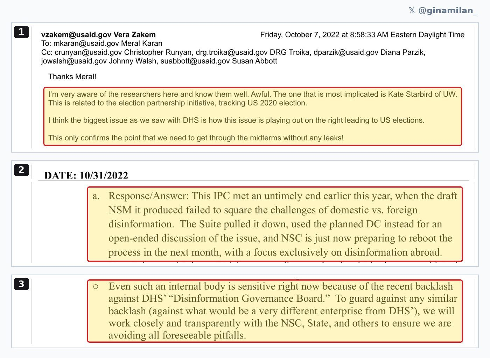
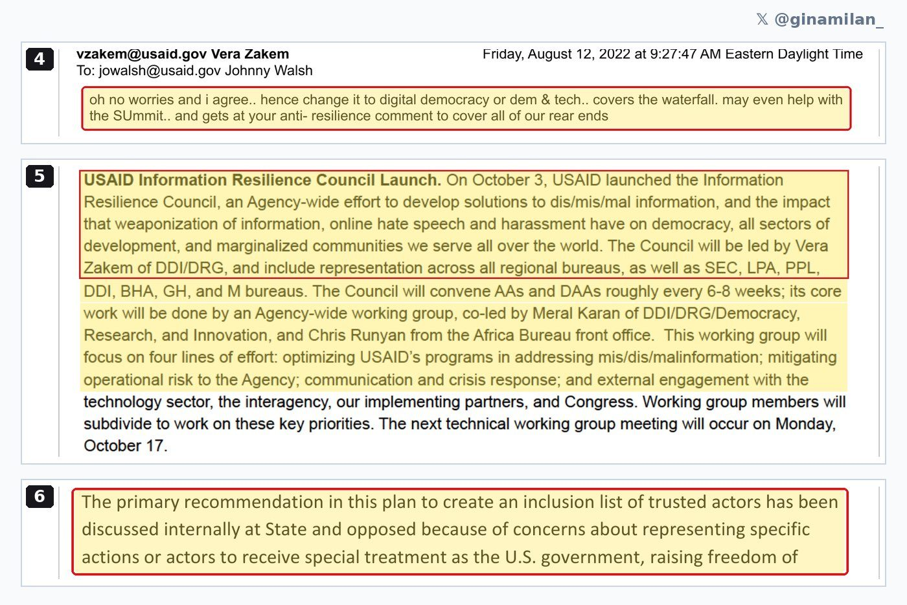
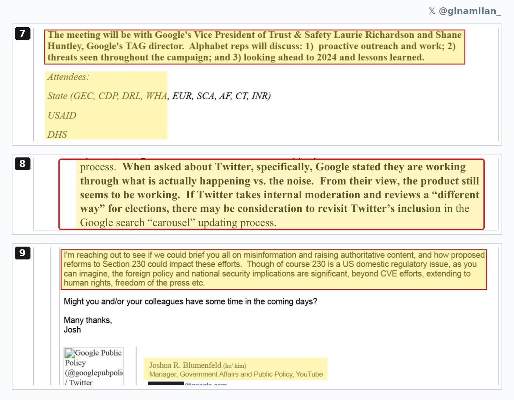
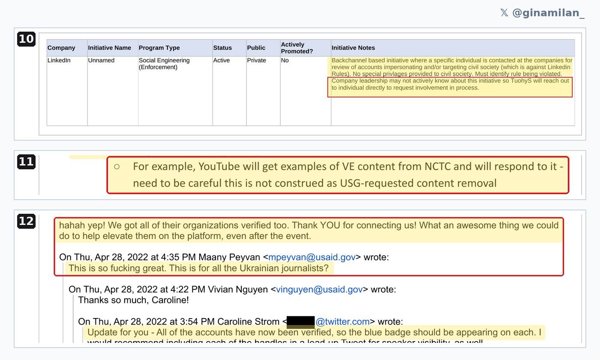
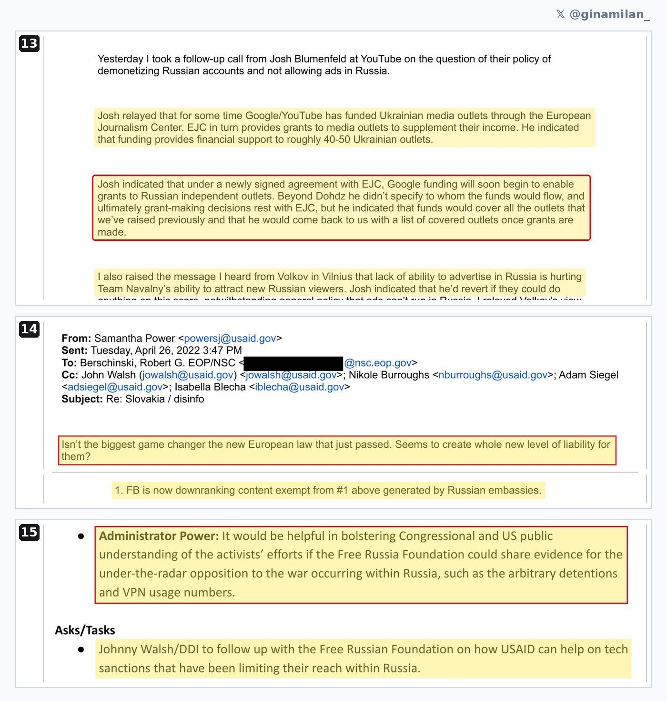
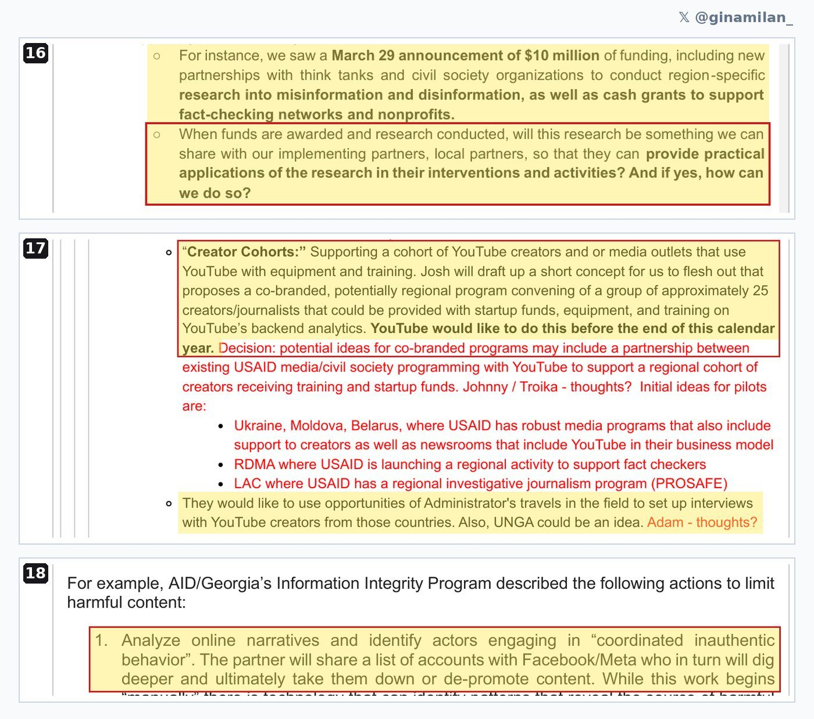
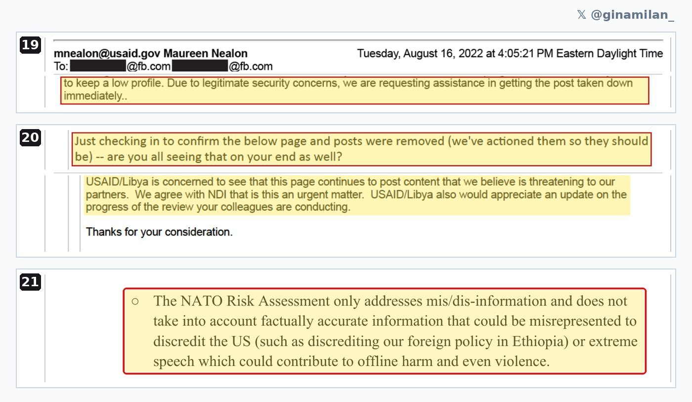
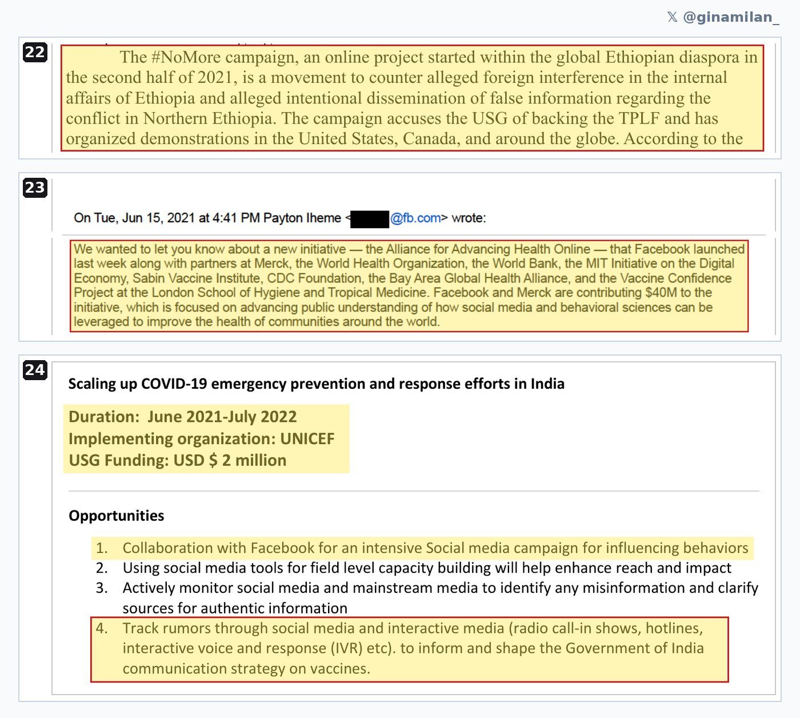
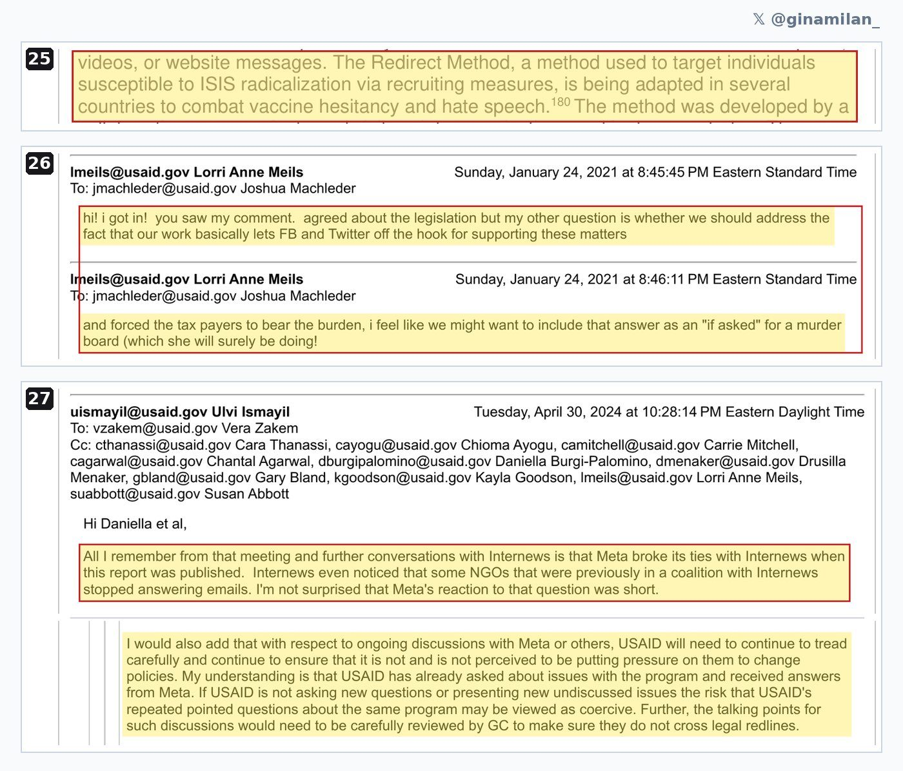
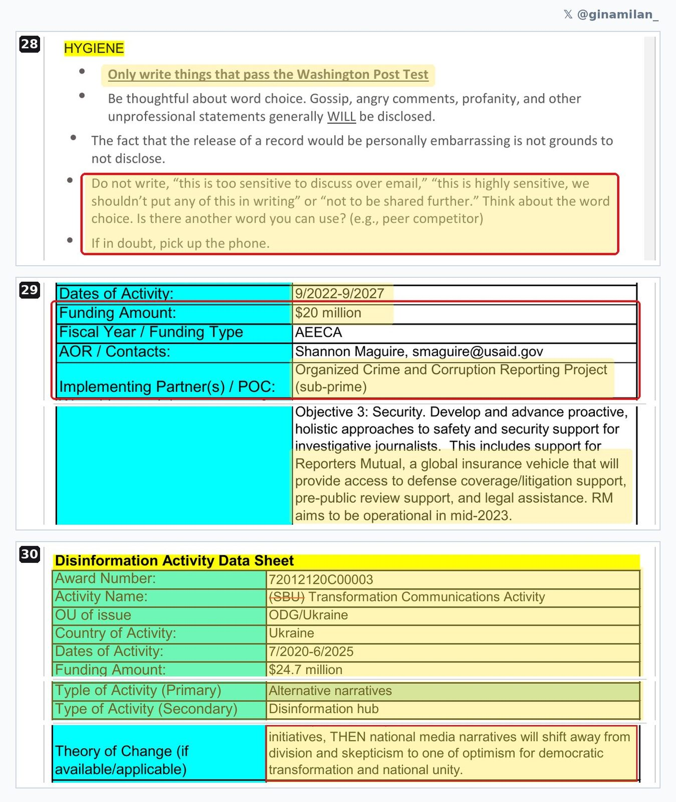
Timeline of Events:
• Nov. 12: Microsoft 365 hit with a major service outage.
• Nov. 13: FAA issues a nationwide ground stop, suspending all US flights.
• Nov. 16: Major US banks, including Bank of America, JPMorgan Chase, and Wells Fargo, hit with widespread online banking outages.
• Nov. 16: United Airlines hit with widespread system outage.
• Nov. 17: $13 trillion asset manager Charles Schwab suffered temporary website outage.
• Nov. 17: Apple $AAPL services experienced outages, including Apple Pay, iCloud, App Store, and more.
• Nov. 17: Europe's largest natural gas supplier 'Equinor' hit with cyberattack.
• Nov 24: CIA and US intelligence systems suffer cyberattack, exposing unclassified government data.
• Nov 24: US Treasury suffers cyberattack targeting its financial crimes agency.
We’re sharing a new preprint showing wet lab validation of intrinsic protein design capabilities of the GPT-6 family of models.
Our models can design new protein shapes and sequences using reasoning and code, without calling specialized biology models to generate them.
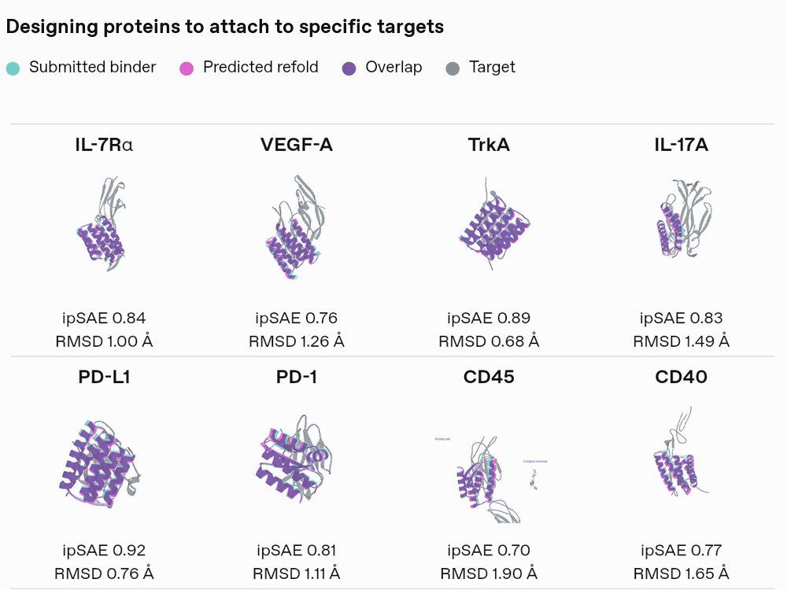
▶ Watch on XBREAKING: US Treasury hit by cyberattack, taking multiple FinCEN systems offline, per a Treasury disclosure.
This comes just hours after the CIA and ODNI were hacked in a cyberattack.
ICE Buffalo arrested 21-year-old Bangladeshi national Saif Abdul Junab Ali on Nov. 24. He was previously arrested for manslaughter in Buffalo, New York. Junab Ali remains in ICE custody pending removal.
Mamdani is now instructing illegals in Arabic how to fight deportation and get their legal fees paid for by our tax dollars
Sick Chinatown murder suspect is illegal migrant who racked up 38 busts while dodging ICE thanks to NYC's 'sanctuary' laws: sources
Woke judge released thug with 38 prior arrests just one day before he broke into woman's apartment and murdered her
Radical Transparency isn’t a slogan—it’s a commitment.
Today, I launched the Radical Transparency website, giving the American people one place to search tens of thousands of public records from across HHS.
Visit https://t.co/IoIeQr23I1 and see for yourself.
Now on https://USAID.gov you can read internal memos and communications showing how the agency actually operated behind the scenes
https://usaid.gov
BREAKING: Xi Jinping launches one of the largest political purges in decades, placing Shanghai's Communist Party chief Chen Jining under investigation for suspected corruption.
U.S. economy grew at rapid 4.3% pace in third quarter, new estimate shows